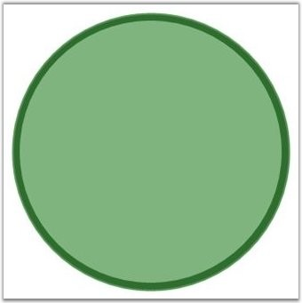
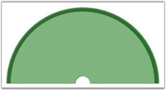

Apply colors to the full / half circle gauge controls using the InnerFrameBrush and OuterFrameBrush properties of the Circular Gauge to give a sophisticated appearance to the Gauge.
You can use the below sample code snippet to apply colors to full circle gauge.
|
[XAML]
<sfgauge:CircularGauge Height="Auto" Width="Auto" Radius="170" Name="circularGauge1" FrameType="fullCircle" Margin="3" Background="#7fb47e" InnerFrameBrush="Green" OuterFrameBrush="Green"/> |
|
[C#]
CircularGauge circulargauge1 = new CircularGauge(); circulargauge1.InnerFrameBrush = new SolidColorBrush(Colors.Green); LayoutRoot.Children.Add(circulargauge1); |

Figure 17Figure 18: Full Circle Gauge with InnerFrameBrush property set to Green
You can use the below sample code snippet to apply colors to half circle gauge.
|
[XAML]
<sfgauge:CircularGauge Height="Auto" Width="Auto" Radius="170" Name="circularGauge1" FrameType="HalfCircle" Margin="3" InnerFrameBrush="Green" Background="#7fb47e" OuterFrameBrush="Green"/> |
|
[C#]
CircularGauge circulargauge1 = new CircularGauge(); circulargauge1.FrameType = GaugeFrameType.HalfCircle; circulargauge1.CenterFrameFillColor = Colors.Green; LayoutRoot.Children.Add(circulargauge1); |

Figure 19: Half Circle Gauge with CenterFrameFillColor property set to Green